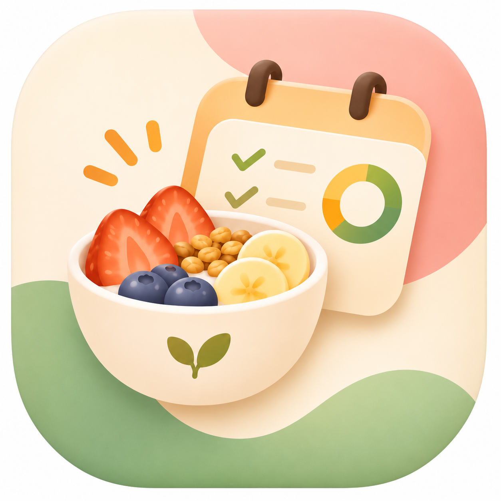

Открываем ваше меню…
У каждой своё меню.А забота и покупки — общие.
Выберите блюдо из подсказок или впишите новое. Калории укажите на вашу порцию целиком.
Пустое поле калорий означает «не указано», а не ноль. Введённые блюда и калории сохраняются в этом браузере.